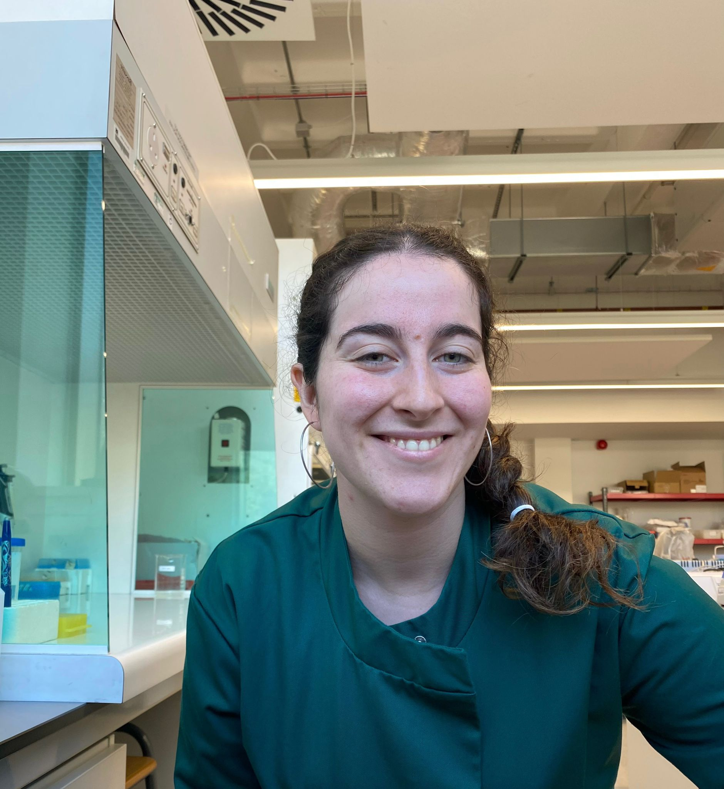

Hi, I am Lucia Lopez Clavain!

Personalize Theme
*Theme settings will be saved for
your next vist
Who am I?
I'm Lucía, a Spanish biomedical scientist with a First Class degree from Abertay University in Scotland, now specialising in bioinformatics and biostatistics. My curiosity about how the body works led me to explore metabolism, nutrigenetics, and endocrine disorders. I'm passionate about research that connects biology, data, and human health. I've gained experience across clinical diagnostics, preclinical toxicology, and blood sciences through roles at NHS Tayside, Charles River Laboratories, and NHS Fife. Feel free to explore my website to learn more about me, my background, and my aspirations!